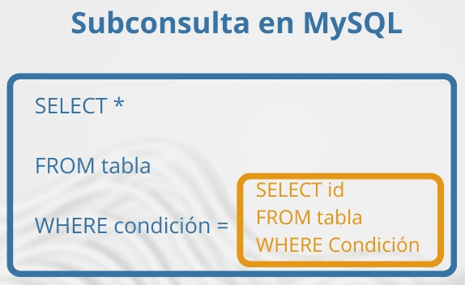

Lecturas - Conceptos Avanzados de Bases de Datos
Subconsultas
Las subconsultas (o consultas anidadas) son consultas SQL que se incluyen dentro de otra consulta. Permiten realizar operaciones complejas y obtener resultados que serían difíciles o imposibles con una sola consulta.
Tipos de Subconsultas
- Subconsultas escalares: Devuelven un único valor.
- Subconsultas de fila: Devuelven una sola fila con múltiples columnas.
- Subconsultas de tabla: Devuelven múltiples filas y columnas.
- Subconsultas correlacionadas: Hacen referencia a columnas de la consulta exterior.
Ejemplos de Uso
-- Subconsulta escalar: Para una galería de arte, encontrar los cuadros que tienen
un precio superior al promedio
SELECT name, listed_price
FROM paintings
WHERE listed_price > (
SELECT AVG(listed_price)
FROM paintings
);
-- Subconsulta de filas: Encontrar todos los coleccionistas que han comprado
cuadros en nuestra galería
SELECT first_name, last_name
FROM collectors
WHERE id IN (
SELECT collector_id
FROM sales
);
-- Subconsulta de tabla: ver el importe total de las ventas de cada artista
que ha vendido al menos un cuadro en nuestra galería
SELECT
artists.first_name,
artists.last_name,
artist_sales.sales
FROM artists
JOIN (
SELECT artist_id, SUM(sales_price) AS sales
FROM sales
GROUP BY artist_id
) AS artist_sales
ON artists.id = artist_sales.artist_id;
-- Subconsulta correlacionada: Para cada coleccionista, calcular el
número de cuadros comprados a través de la galería
SELECT
artists.first_name,
artists.last_name,
artist_sales.sales
FROM artists
JOIN (
SELECT artist_id, SUM(sales_price) AS sales
FROM sales
GROUP BY artist_id
) AS artist_sales
ON artists.id = artist_sales.artist_id;
Las subconsultas son herramientas poderosas que permiten realizar consultas complejas y obtener información específica de manera eficiente.
LearnSQL. (s.f.). 5 ejemplos de subconsultas SQL. LearnSQL. Recuperado de learnsql.es